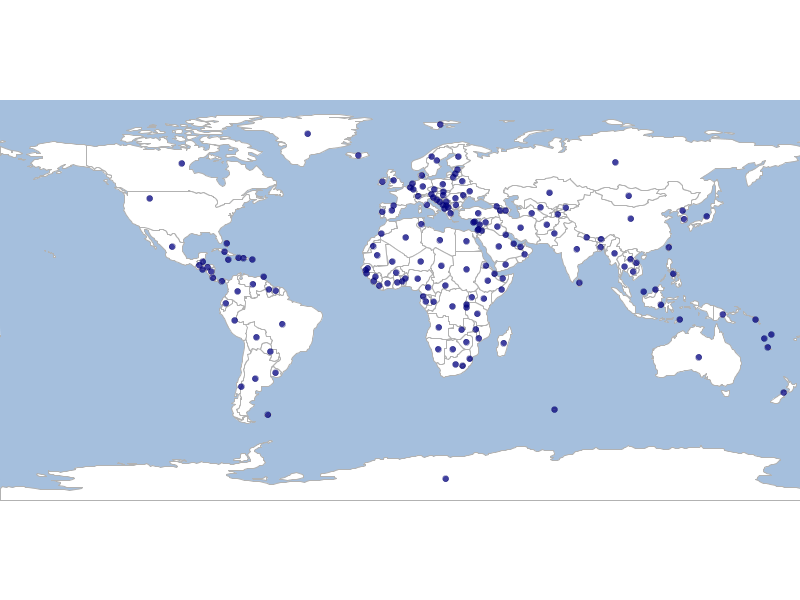

geoc vector randompoints -n 10 -g "1,1,10,10" | geoc vector buffer -d 10geoc
A geospatial command line app
Introduction
Command line app for geospatial data
Key Features
Unix Philosophy
Read and Write Text
CSV for Vector
ASCII Grid for Rasters
WKT for Geometry and Projections
One Command Does one Things
cat states.csv | geoc vector envelopecat states.csv | geoc vector envelope | geoc vector buffer -d 1.2Git Style Commands
geoc
geoc list
geoc vector buffer -i states.shp -o states_buf.shp -d 0.5
geoc raster crop -i raster.tif -b "-120,-40,120,40"Technology
JVM
GeoTools and JTS
GeoScript
Groovy
Args4J
Extensible
Commands use Service Provider Interface (SPI)
Add commands by adding them to the classpath
Modules
Vector | Raster | Tile |
Map | Style | Geometry |
Projection | Filter |
Data Source Strings
key1=value key2='value with spaces'
Vector
Raster
Tile
Map
Vector Data Source Strings
PostGIS
dbtype=postgis database=postgres host=localhost port=5432 user=postgres passwd=postgres
GeoPackage
database=layers.gpkg dbtype=geopkg
layers.gpkg
Shapefile
url=states.shp
states.shp
Raster Data Source Strings
All rasters are currently file based.
GeoTIFF
source=srtm_12_03.tif
World
earth.png
Tile Data Source Strings
MBTiles
type=mbtiles file=states.mbtiles
states.mbtiles
GeoPackage
type=geopackage file=states.gpkg name=states pyramid=globalmercator
states.gpkg
TMS
type=tms file=/Users/you/tms format=png name=tms pyramid=geodetic
Map Data Source Strings
layertype = layer, raster, tile
layername = name of the layer
layerprojection = projection
style = sld or css
data source strings
Map Data Source Strings
Vector
layertype=layer dbtype=geopkg database=/Users/user/Desktop/countries.gpkg layername=countries style=/Users/user/Desktop/countries.sld
Raster
layertype=raster source=rasters/earth.tif
Tile
layertype=tile file=world.mbtiles
Vector Examples
Buffer
Buffer every feature in a layer
#!/bin/bash
geoc vector randompoints -g -180,-90,180,90 -n 100 > points.csv
cat points.csv | geoc vector buffer -d 10 > polygons.csv
cat points.csv | geoc vector defaultstyle --color navy \
-o 0.75 > points.sld
cat polygons.csv | geoc vector defaultstyle --color silver \
-o 0.5 > polygons.sld
geoc map draw -f vector_buffer.png \
-l "layertype=layer file=data.gpkg layername=ocean style=ocean.sld" \
-l "layertype=layer file=data.gpkg layername=countries style=countries.sld" \
-l "layertype=layer file=polygons.csv style=polygons.sld" \
-l "layertype=layer file=points.csv style=points.sld"Buffer

Centroids
Calculate a centroid every feature in a layer
#!/bin/bash
geoc vector centroid -i naturalearth.gpkg -l countries \
-o countries_centroids.shp
geoc vector defaultstyle --color navy -o 0.75 \
-i countries_centroids.shp > countries_centroids.sld
geoc map draw -f vector_centroid.png \
-l "layertype=layer file=data.gpkg layername=ocean style=ocean.sld" \
-l "layertype=layer file=data.gpkg layername=countries style=countries.sld" \
-l "layertype=layer file=countries_centroids.shp style=countries_centroids.sld"Centroids

Voronoi
Calculate a voronoi diagram around a layer
#!/bin/bash
geoc vector centroid -i naturalearth.gpkg -l countries \
| geoc vector voronoi -o voronoi.shp
geoc vector defaultstyle --color navy -o 0.15 \
-i voronoi.shp > voronoi.sld
geoc map draw -f vector_voronoi.png -b "-180,-90,180,90" \
-l "layertype=layer file=naturalearth.gpkg layername=ocean style=ocean.sld" \
-l "layertype=layer file=naturalearth.gpkg layername=countries style=countries.sld" \
-l "layertype=layer file=voronoi.shp layername=voronoi style=voronoi.sld"Voronoi
Raster Examples
SRTM
Download SRTM data and get info
#!/bin/sh
# Download SRTM data for washington state
curl -O http://srtm.csi.cgiar.org/SRT-ZIP/SRTM_V41/SRTM_Data_GeoTiff/srtm_12_03.zip
# Unzip data
unzip srtm_12_03.zip
# View info
geoc raster info -i srtm_12_03.tifRaster Info
Format: GeoTIFF
Size: 6001, 6001
Projection ID: EPSG:4326
Projection WKT: GEOGCS["WGS 84",
DATUM["World Geodetic System 1984",
SPHEROID["WGS 84", 6378137.0, 298.257223563, AUTHORITY["EPSG","7030"]],
AUTHORITY["EPSG","6326"]],
PRIMEM["Greenwich", 0.0, AUTHORITY["EPSG","8901"]],
UNIT["degree", 0.017453292519943295],
AXIS["Geodetic longitude", EAST],
AXIS["Geodetic latitude", NORTH],
AUTHORITY["EPSG","4326"]]
Extent: -125.00041606131708, 44.9995835996815, -119.99958272798375, 50.00041693301483
Pixel Size: 8.333333333333332E-4, 8.333333333333332E-4
Block Size: 6001, 1
Bands:
GRAY_INDEX
Min Value: -32768.0 Max Value: 4371.0Crop and Create Contours
Crop raster and create contours
#!/bin/sh
# Crop raster to Pierce County
geoc raster crop -i srtm_12_03.tif \
-b -123.552246,46.253948,-120.739746,47.522765 -o pc.tif
# Create contours
geoc raster contour -i pc.tif -o contours.shp -v 300 -s -m
# Create a map
geoc style create -s stroke=black \
-s stroke-width=0.1 -t sld > contours.sld
geoc raster style colormap \
-v 25=#a6611a -v 473.2=#dfc27d -v 921.5=#f5f5f5 \
-v 1370=#80cdc1 -v 1818=#018571 > pc.sld
geoc map draw -f pc.png \
-l "layertype=raster source=pc.tif style=pc.sld" \
-l "layertype=layer file=contours.shp style=contours.sld"SRTM Map

Reclassify
Reclassify the Raster
#!/bin/sh
geoc raster reclassify -i pc.tif -o pc_reclass.tif \
-r 0-0=1 -r 0-50=2 -r 50-200=3 \
-r 200-1000=5 -r 1000-1500=4 -r 1500-4000=6
geoc raster style colormap \
-v 1=#FFFACD -v 2=#F0E68C -v 3=#DAA520 \
-v 4=#FF4500 -v 5=#800000 -v 6=#F5FFFA > pc_reclass.sld
geoc map draw -f pc_reclass.png -l \
"layertype=raster source=pc_reclass.tif style=pc_reclass.sld"Reclassify Map

Vectorize
Turn a Raster into a vector Layer
#!/bin/sh
geoc raster polygon -e -i pc_reclass.tif -o pc_reclass_poly.shp
geoc vector uniquevaluesstyle -i pc_reclass_poly.shp -f value \
-c BoldLandUse > pc_reclass_poly.sld
geoc map draw -f pc_reclass_poly.png \
-l "layertype=layer file=pc_reclass_poly.shp style=pc_reclass_poly.sld"Vector Layer

Tile Examples
GeoPackage Tiles
Generate GeoPackage Geodetic Tiles
#!/bin/bash
geoc tile generate \
-l "type=geopackage file=tiles.gpkg name=world_geodetic pyramid=geodetic" \
-m "layertype=layer file=naturalearth.gpkg layername=ocean style=ocean.sld" \
-m "layertype=layer file=naturalearth.gpkg layername=countries style=countries.sld" \
-s 0 \
-e 3 \
-v
geoc tile pyramid \
-l "type=geopackage file=tiles.gpkg name=world_geodetic" \
-o json
geoc tile stitch raster \
-l "type=geopackage file=tiles.gpkg name=world_geodetic" \
-o world_geodetic_2.png -z 2Geodetic Tiles

MBTiles
Generate MBTiles Mercator Tiles
#!/bin/bash
geoc tile generate \
-l tiles.mbtiles \
-m "layertype=layer file=naturalearth.gpkg layername=ocean style=ocean.sld" \
-m "layertype=layer file=naturalearth.gpkg layername=countries style=countries.sld" \
-s 0 \
-e 3 \
-v
geoc tile pyramid \
-l tiles.mbtiles \
-o json
geoc tile stitch raster \
-l tiles.mbtiles \
-o world_mercator_2.png -z 2Mercator Tiles
Other Examples
Geometry Decimal Degrees
Read and Write Decimal Degrees
#!/bin/bash
echo "Decimal Degrees to XY:"
geoc geometry dd2pt -d "122d 19m 59.0016s W, 47d 36m 34.9992s N" -t xy
echo "Decimal Degrees to WKT:"
geoc geometry dd2pt -d "122d 19m 59.0016s W, 47d 36m 34.9992s N" -t wkt
echo "Decimal Degrees to GeoJSON:"
geoc geometry dd2pt -d "122d 19m 59.0016s W, 47d 36m 34.9992s N" -t json
echo "Point to DMS:"
geoc geometry pt2dd -p "POINT (-122.5256194 47.212022222)" -t dms
echo "Point to DMS with characters:"
geoc geometry pt2dd -p "POINT (-122.5256194 47.212022222)" -t dms_char
echo "Point to DDM:"
geoc geometry pt2dd -p "POINT (-122.5256194 47.212022222)" -t ddm
echo "Point to DDM with characters:"
geoc geometry pt2dd -p "POINT (-122.5256194 47.212022222)" -t ddm_charOutput
Decimal Degrees to XY:
-122.333056, 47.609722
Decimal Degrees to WKT:
POINT (-122.333056 47.609722)
Decimal Degrees to GeoJSON:
{"type":"Point","coordinates":[-122.3331,47.6097]}
Point to DMS:
-122° 31' 32.2298" W, 47° 12' 43.2800" N
Point to DMS with characters:
-122d 31m 32.2298s W, 47d 12m 43.2800s N
Point to DDM:
-122° 31.5372' W, 47° 12.7213' N
Point to DDM with characters:
-122d 31.5372m W, 47d 12.7213m NStitch together OSM Tiles
#!/bin/bash
geoc map draw -f map_osm.png \
-l "layertype=tile type=osm" \
-b "18.748169,35.643905,26.658325,38.908133,EPSG:4326"
Create a Map Cube
#!/bin/bash
geoc map cube -f map_cube_watercolor.png \
-l "layertype=tile type=osm name=stamen-watercolor"Help
command help
geoc tile generate --helpman pages
man geo-vector-buffer

web site

web docs
geoc geometry convert --web-helpbash completion
Thank you!